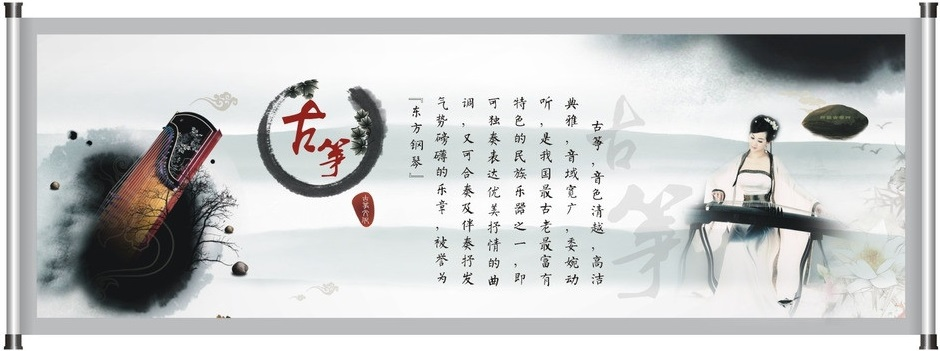

筝，在文献典籍中多称作秦筝。
春秋战国时期，筝在秦地已经广为流传。除了秦地，齐鲁、郑卫和赵国也很流行。秦始皇统一中国以后，筝的流传范围更是扩大到河南、山东、江苏、浙江、福建、广东、四川、贵州、云南、和内蒙古等地。
伴随着筝的流传与普及，它本身也得到了不断地发展和完善。从最初的五弦，经九弦到战国末期发展成为十二弦，流行八百多年后到隋朝成为十三弦。
筝在古代一直使用丝质的弦，丝弦被染成朱红或翠绿、藏青等诸色，极具装饰情调。后汉以来，筝不仅继续流传于民间，也成为文人雅士喜好的乐器。
盛唐是我国筝乐发展的黄金时期。
这一时期十二弦与十三弦都在使用。十二弦筝使用于雅乐，十三弦筝使用于俗乐。历代文人墨客在史书典籍和诗歌辞赋中留下了许多描绘和吟咏筝的文字，王涯、李白、岑参、刘禹锡、白居易、李商隐等诗人，都不吝笔墨，为筝写下佳辞丽句。尤其是通晓音乐的大诗人白居易，有近二十首与筝有关的诗，他对筝情有独钟，其喜爱之情跃然诗间：“云髻以萧绿，花颇旖旎红。双眸剪秋水，十指剥春葱。”诗中描绘的是一位女子弹筝时的情景，诗人笔下的弹筝女可谓风情万种，气质不凡。美妙的音乐令人情思绵绵，回味无穷。
时至宋代，与宫廷音乐相比，筝在民间音乐中显得更为兴盛
此时用筝还是十三弦，但筝曲多哀婉，乐风缠绵，不管是弹筝者还是赏筝者，情绪意境都别有一番哀伤、忧愁。
元明之际，筝在弦制和表演方式上都有较大的发展。
根据明代大学者朱载堉在《明郑氏子瑟谱》中记载：“今官筝十五弦，而世多用十四弦者”。可知十三弦筝到了明代逐渐让位于十四弦筝和十五弦筝。在表现形式上，以往的筝独奏及筝曲继续流行，元代又出现了两面筝对弹的表演形式。元代著名诗人杨维祯的诗《春夜乐》中就有“双筝对弹”的表演诗句。
到清末，筝又增加了一弦，发展成十六弦。
钢丝弦替代沿用了二千余年的丝质弦，使筝的音色更加明亮，触弦更加灵敏，音色也得到加强，这一直沿用至今。
建国早期的传统筝曲大多是以各地地域戏曲曲艺和民间音乐等素材改创的，受当地人文思想、商业经济、语言差异等多方面的影响，加之口传心授的主要民间传承方式和演奏者个人风格等因素，在漫长的筝乐演变过程中形成了鲜明的流派特征。风格迥异的各古筝流派因此而产生，“以韵补声”的不同用法恰恰正是古筝各流派演奏风格迥异的重要体现之处。
20世纪起
“五四”新文化新思想的传播推动了近现代音乐创作的全面展开。一曲由娄树华先生于1938年前后编创的《渔舟唱晚》开启了近现代古筝艺术发展的新时期。使原先以民间音乐为主流的传统筝曲时代过渡到以专业演奏家和作曲家创新作品的新时代。该曲突破了民间音乐“八板体”的曲式结构和地域流派风格的局限，运用慢板的非八板体的句式和快板模进音型，以及在技法、演奏风格、声韵特色等方面进行大胆的尝试和创新。虽然乐曲还是以单声旋律进行，但它掀开了古筝作品创新与发展的新篇章。
上世纪五十年代
在党和政府的政策扶持下，各地艺术院校相继开设了古筝专业课，一批民间音乐家于五十年代后进入高校传授筝艺，走上专业音乐道路，同时他们努力开拓创作思路，吸收其他相关艺术的音乐元素，在原有民间音乐素材的基础上整理、发掘、编创了一些独奏曲。这些筝曲在创新多声部的演奏方法的同时也或多或少的留有各地域流派技法、音调和风格特点。
同一时期，筝曲创作涌现出一批由民间演奏家为主创作的含有两声部音乐表现形式的新作品。如《纺织忙》通过双手交替弹奏小撮而形成伴奏音型式的两声部，旋律欢快跳跃，模仿纺织机的节奏与音响，生动的表现纺织女工们繁忙而热闹的劳动场面。
六十年代前后
经老一辈音乐家们的辛勤耕耘，一批由专业院校毕业的音乐人才纷纷走向艺术团体或留校任教成为新时期筝乐创作和发展的骨干力量。他们进一步开拓创作思维和音乐语言，创作了相当数量的古筝现代作品，把中国传统音调与民族和声的多声创作手法运用的更为成熟。如《春到拉萨》中很多乐段运用和弦、音程、分解琶音、刮奏等多种伴奏音型陪衬烘托主旋律构成和声性织体的二声部，在慢板中还出现有支声复调和模仿复调的创作手法，这种在声部间时而分离时而汇合的织体形式使原本为和声性伴奏织体的左手声部也创造性的实现主题旋律的特征，一改传统意义上的单线思维方式，使旋律能够在声部的纵向织体上得以体现，大大拓宽了声部间组合的织体表现形式。
六十年代中期历经“打倒一切”的文革时期，使这一时期创作题材在特定的政治背景之下带有深深的时代烙印，其内容单一，多是反映社会生活和表现积极向上的时代精神风貌。如《战台风》成为文革时期最具典型的筝曲代表，是浙派风格在新时代筝曲创新的延伸。
七十年代以后
筝乐创作进入了由高校毕业的专业演奏家为主体的创作阶段。大批新创筝曲相继问世，筝艺的广泛交流与传播使筝乐的创作、演奏、教学重新呈现出活跃的趋势。这批专业演奏家创新的借鉴西方音乐素材，表现在作品的曲式结构、调式调性、多声部运用等方面。并将之与民族民间音乐特点相结合，形成各具特色的新创作品。这一时期的多声思维运用在新创作品中几乎成为共用的写作手法，使古筝作品中多声部运用在新时期有新的发展，从而成为筝乐发展史上一个重要的历史时期。早期的作品有《浏阳河》，乐曲中出现两种类型的二声部和声织体，一是简洁的运用单音和音程的固定音型，以八平的固定节奏组成的和声性伴奏织体以配合主奏旋律；二是通过下行走向的分解琶音按固定节奏依次进行，使主旋律隐伏在其中。两种手法的运用都通过和声织体的形式使双手演奏融为一体，进而突出旋律声部。
今天，在台湾、香港及东南亚各国的华人社会，中国筝都十分普及。
甚至远渡欧美，在世界各地的华人社区，都能听到清丽典雅的华乐筝曲。
中国古筝，为人类音乐文化宝库增添财富的同时，也不断丰富和完善着自身。筝，这一古老的华夏民族乐器正迎来复兴繁盛的新纪元。